Gehen Sie mit uns "on air"! Schnell und erfolgsorientiert bieten wir individuelle Kommunikationslösungen im Hörfunk und für Podcasting. Von der Redaktion, Aufnahme und Produktion über Distribution und Platzierung bis hin zur detaillierten Dokumentation liefern wir Full Service aus einer Hand.
Willkommen bei PR ON AIR
Über uns
Podcast
Kompetenzen
PR ON AIR ist darauf spezialisiert, spannende und informative Radiobeiträge zu produzieren. Wir beherrschen das klassische Ratgeberformat genauso wie den soundgeladenen Spielebeitrag, den begeisternden Reisetipp oder die Buchbesprechung. Mit uns hört sich das Ergebnis nach Radio an - damit es dort auch wirklich gesendet wird.
Auszug aus unseren Referenzen
- 
- 
- 
- 
- 